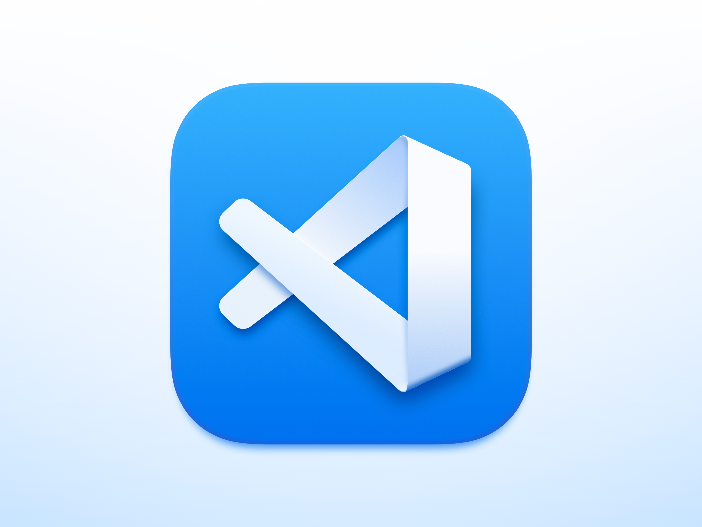

Visual Studio Code (VS Code) is a lightweight yet powerful code editor developed by Microsoft, widely used by programmers and developers around the world. It supports multiple programming languages such as JavaScript, Python, C++, and HTML, making it versatile for different types of projects. One of its strongest features is the vast collection of extensions, which allow users to customize their workspace with tools for debugging, version control, themes, and frameworks. VS Code also has an intuitive interface, built-in terminal, and smart features like IntelliSense for code suggestions and auto-completion, which help boost productivity. Its speed, flexibility, and free availability have made it one of the most popular code editors for both beginners and professional developers.
The importance of Visual Studio Code (VS Code) lies in its ability to provide developers with a highly efficient, flexible, and user-friendly environment for writing and managing code. As a free, open-source editor, it lowers the barrier for beginners while still offering advanced features that professionals rely on daily. Its lightweight design makes it fast and responsive, yet it is powerful enough to handle large projects across multiple programming languages. VS Code’s support for extensions is one of its biggest strengths, allowing developers to add tools for debugging, testing, version control, and frameworks like React, Django, or Node.js, all within the same workspace. This adaptability makes it suitable for web development, app development, data science, and even DevOps. Features such as IntelliSense for code completion, integrated Git for collaboration, and a built-in terminal help streamline workflows and save time, reducing the need to switch between different applications. Moreover, its customization options—like themes, layouts, and shortcuts—make it possible for users to create a coding environment tailored to their personal style and needs. By bringing together productivity, versatility, and ease of use in one platform, VS Code has become an essential tool that empowers developers to work smarter, faster, and more effectively, whether they are students learning to code or professionals building complex systems.
.jpeg)